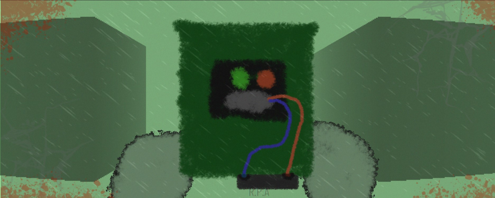

A hardcore shooter where you turn into a rooster... your wings get wet and dissolve under the acid rain and the sky is painted mint...
To survive, you have to manage the local currency properly and buy medicines on time. Your main goal is to buy an R.P.A suit that protects well from the rain. There are a lot of heals here like a small first aid kit, a large first aid kit, a medium first aid kit, syringes, bandages, and so on...
The accident at the Yellow Mountain plant released a lot of harmful substances into the air. There was a farm next to the plant where all the animals started going crazy and mutating, and all the farmers died long ago. Local residents and authorities do not know about the situation at the farm, and those who went there to investigate have disappeared without a trace.
Free DLC for the original ChickenFine, now XP is replaced by "Zelenolit" ore and the action takes place at the "Yellow Mountain" plant, where there is a lot of radiation and because of this the game is very hardcore. The player has only 30 HP and a very weak revolver, bonuses like a bomb that increases XP were removed and the RPA suit was strengthened, The DLC also has incredible original music and wonderful ambient!